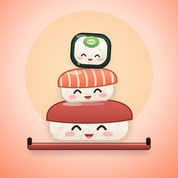

Sushi Tower
Kawaii suşi kulesi — birleştir, dengede tut.
Nasıl oynanır?
- Üstte sağa sola giden suşiyi tabağa bırakmak için ekrana dokun.
- Birbirine değen 3 aynı suşi birleşip daha değerli bir suşiye dönüşür. Zincirleme birleşmeler kombo yapar.
- Tabak bir pivot üzerinde durur ve ağırlığa göre eğilir. Bir suşi tabaktan düşerse ya da kule kesikli çizgiyi uzun süre aşarsa oyun biter.
- Günlük bulmacada herkes aynı suşi sırasını alır; sınırlı sayıda suşiyle hedef suşiyi yapmaya çalış.
- Kazandığın kobanlarla yeni tabaklar aç, keşfettiğin suşileri albümde gör.
Sık sorulanlar
İnternet gerekiyor mu? Hayır, oyun tamamen çevrimdışı çalışır. Liderlik tablosu için Game Center'a giriş yapman yeterli.
Ses gelmiyor. Telefon sessiz modda olabilir; ana ekrandaki müzik ve ses simgelerini de kontrol et.
Koban nedir? Oyun oynayarak kazanılan oyun içi paradır; gerçek parayla satılmaz.
İletişim
Soru, öneri veya hata bildirimi için: t44mehmet63@gmail.com
Geliştirici: Mehmet TÜRKMEN
Support
How to play
- Tap the screen to drop the sushi that slides along the top onto the plate.
- Three touching sushi of the same kind merge into a more valuable one. Chain merges build combos.
- The plate sits on a pivot and tilts with the weight. The run ends if a sushi falls off, or if the tower stays above the dashed line for too long.
- In the daily puzzle everyone gets the same sushi order; make the goal sushi with a limited number of drops.
- Spend the koban you earn on new plates and see every sushi you discover in your album.
FAQ
Do I need internet? No, the game works fully offline. Sign in to Game Center to use the leaderboard.
No sound? Your phone may be in silent mode; also check the music and sound icons on the home screen.
What is koban? An in-game currency earned by playing; it is never sold for real money.
Contact
Questions, ideas or bug reports: t44mehmet63@gmail.com
Developer: Mehmet TÜRKMEN